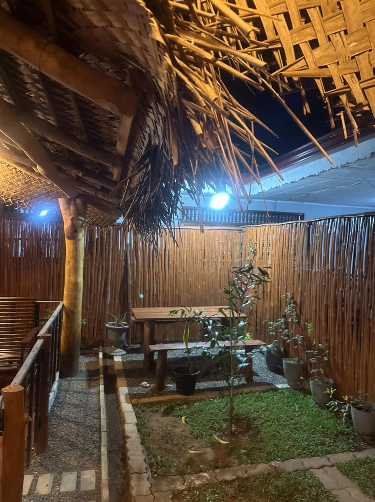
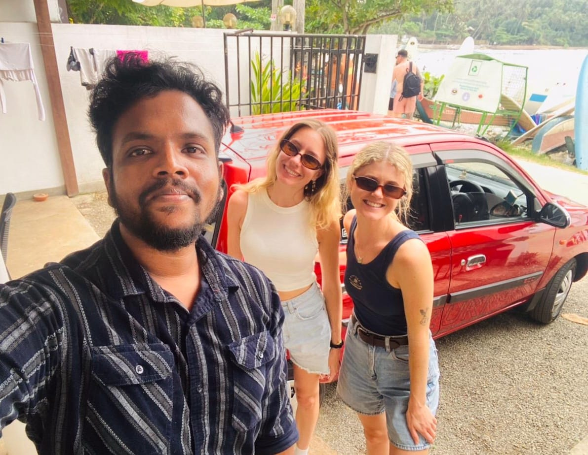

Stay Guide
TuskersEdge Homestay in Udawalawa: calm base for safari days
If you want a clean, relaxed stay close to Udawalawa National Park, TuskersEdge Homestay gives you a practical base with comfortable rooms, local hosting, and quick safari access.
What Works Well
- Comfortable private stay with a quiet local atmosphere.
- Easy access for early-morning Udawalawa safari departures.
- Useful for couples, families, and small private groups.
Useful Details
- Area: Udawalawa, Sri Lanka.
- Great as a one-night or two-night safari stop.
- Best combined with Ella, Yala, or South Coast routes.
Good For
- Wildlife-focused itineraries.
- Travelers who prefer simple, direct logistics.
- Guests who want local support for transfers and tours.
Why add this stay to your Sri Lanka plan
Udawalawa is one of the easiest wildlife zones to include in a loop itinerary. TuskersEdge Homestay makes it practical to arrive in the afternoon, rest well, and leave early for safari timing.
If your route includes hill country or southern beaches, this stay acts as a smooth transition point. You avoid long same-day transfers and keep the trip pace comfortable.
For custom planning, we usually pair Udawalawa with experiences like village meals, scenic drives, and short nature stops before heading to the next district.


Plan your stay with us
Want this added to your full route with airport pickup, safari jeep, and next-stop transfer? Message us and we will build the full sequence.